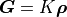
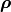
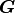

3. Algorithm¶
SpM program solves the linear equation  with respect to  for given .
Because of ill-conditioned nature of the matrix  , a simple treatment of this equation is numerically unstable.
For example, the solution using the Moore-Penrose pseudo-inverse matrix
results in NaN.
Even if one manages to derive a definite solution, it is quite sensitive to numerical noise and often breaks preconditions that any physical spectra must satisfy.
This becomes particularly problematic when is evaluated by quantum Monte Carlo technique.
, a simple treatment of this equation is numerically unstable.
For example, the solution using the Moore-Penrose pseudo-inverse matrix
results in NaN.
Even if one manages to derive a definite solution, it is quite sensitive to numerical noise and often breaks preconditions that any physical spectra must satisfy.
This becomes particularly problematic when is evaluated by quantum Monte Carlo technique.
SpM provides a physical solution which fulfills the equation of concern within a certain accuracy.
The solution satisfies the constraints such as sum rule and nonnegativity.
The engine of SpM program uses the method of L1-norm regularization to separate relevant information in from irrelevant one which makes the spectrum unphysical. This process is automatically done without hand-tuning parameters.
For details, see the original article
J. Otsuki, M. Ohzeki, H. Shinaoka, K. Yoshimi, “Sparse modeling approach to analytical continuation of imaginary-time quantum Monte Carlo data” Phys. Rev. E 95, 061302(R) (2017).